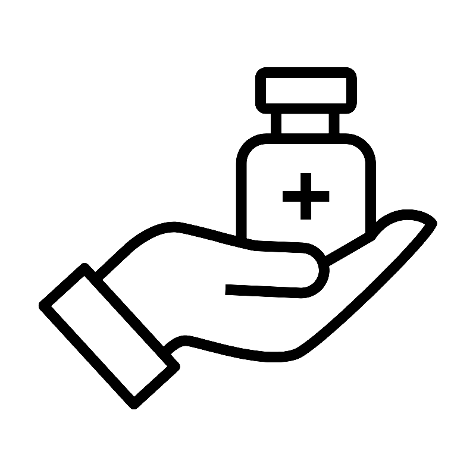
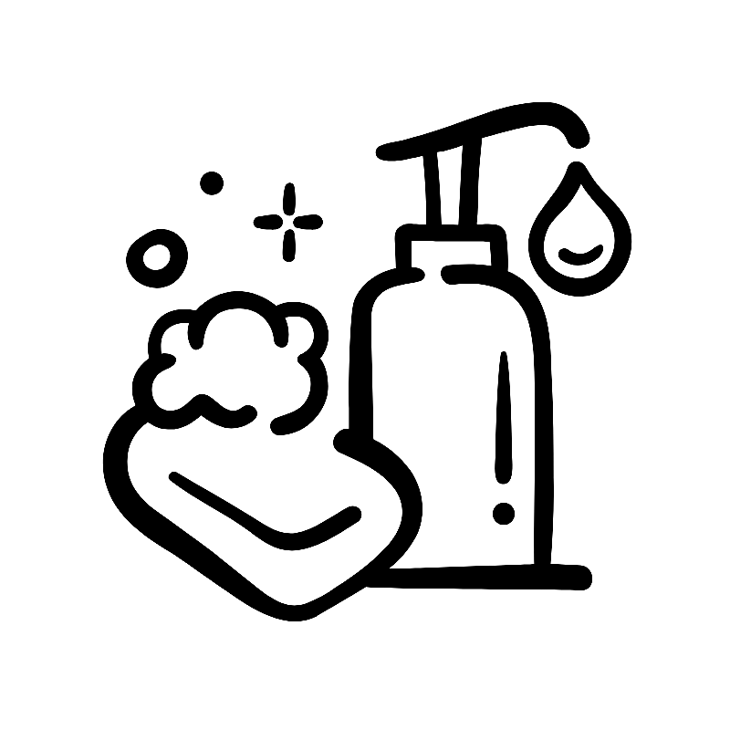
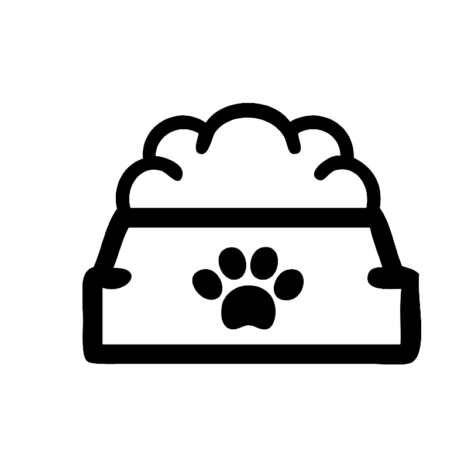

A maioria dos projetos precisam de:



Ou qualquer outro produto que ofereça suporte e proteção aos animais resgatados, como: Cama, roupa, cobertores,
brinquedos e etc.
Você pode levar sua doação em qualquel um dos nossos ponto de adoção ou enviar via correios em nosso
endereço Rua dos Animaizinhos, N 345, Bairro: Jardim dos Sonhos - MG, CEP 12345-678.